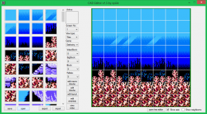
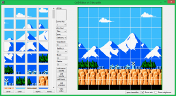
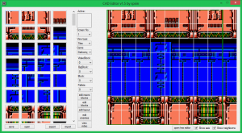
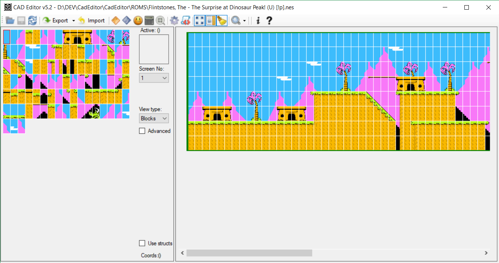
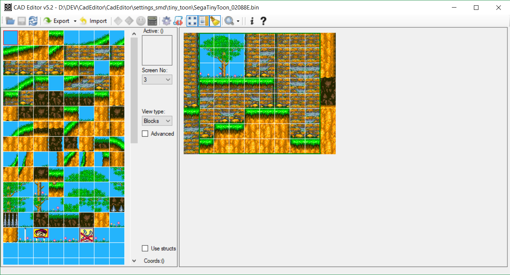

0. Мой опыт исследователя игр
Я увлекся исследованием игр практически сразу, как открыл для себя возможность эмуляции игр на компьютере. Я пропустил период, в который создавались эмуляторы, и собиралась база дампов ROM-файлов популярных игр - они были доступны в сети.Изначально меня интересовали секреты в играх - содержащийся в играх неиспользованный контент, коды для перехода в режим отладки для тестов игры, системы паролей, малоизвестные игрокам секретные места и бонусы. Большая часть такого материала уже была найдена авторами дампов и ромхакерами и выложена в сети, но я наткнулся на то, что открыто и исследовано ещё далеко не всё.
Вот ссылки на некоторые мои исследования:
- Tecmo World Cup password system
- Goal! Two password system
- Adventure Island 2 random level select system
- Battletoads regional version differences
- Addams Family doors system
Одной из моих идей исследования игр стало построение карты уровней по бинарным данным, хранящимся в ROM-файле. С большим трудом, потратив несколько недель, я смог получить карту уровней игры Jungle Book. Однако, в ходе исследования, я понял, что могу повторить этот процесс с другими играми. Меня интересовала, по большей части, только возможность получить карту, но в это время я наткнулся на ромхакера с ником Lomax, который создавал хаки классических игр с изменёнными уровнями и боссами. Он использовал для изменения уровней Hex-редактор. Я написал ему, что могу сделать визуальный редактор уровней для игры Chip & Dale (к тому моменту я уже частично разобрал устройство уровней в ней), и он очень заинтересовался этой идеей.
Таким образом, я начал работать над прототипом CadEditor, для того, что дать возможность изменять уровни в игре Chip & Dale.
1. Редактор Чипа и Дейла и Чёрного Плаща
Я распространял первые версии редактора через форум emu-land, и получил много отзывов с предложениями улучшений и найденными недоработками редактора. Постепенно я добавлял необходимые фичи - редактирование блоков, рендер графики с помощью банков CHR так, как это делает видеопроцессор консоли, редакторование объектов и параметров уровней. Одновременно с этим я обнаружил, что игра Darkwing Duck использует такую же систему хранения уровней, и даже часть данных в ROM-файле находится по таким же смещениям. Оказалось, что немного изменив редактор, можно добавить в него поддержку этой игры.К этому моменту пользователи редактора использовали редактор, чтобы создать хаки для этих 2 игр: ссылки на хаки.
2. Редактор Capcom-игр
Меня заинтересовало - если игры Chip & Dale и Darkwing Duck оказались так похожи, то, возможно, получится добавить и редактор и другие игры Capcom?Я исследовал формат уровней игр Duck Tales 1/2, Tale Spin и Little Mermaid, и заметил, что они достаточно похожи по формату уровней между собой. Однако, все они имели мелкие отличия, которые не позволяли просто добавить их в редактор, просто изменив адреса хранения данных (за исключением Tale Spin - в ней формат полностью совпадает с Darkwing Duck).
Я размышлял над тем, каким образом добавить эти игры в редактор, так чтобы иметь возможность расширять его. Очевидно было, что необходимо вынести все адреса данных в конфигурационный файл. Но как описать способ загрузки данных, формат хранения которых заранее неизвестен? Одно из возможных решений - встроить в редактор интерпретацию скриптового языка программирования, на котором и будут описываться способы загрузки данных из игр.
Таким образом, пользователи смогут реализовывать любые функции загрузки данных для различных игр. Я написал сам редактор на C#, и в качестве скриптового языка выбрал библиотеку CSScript, которая позволяет писать скрипты также на C#. Это язык не самый простой или лаконичный, но выбор C# позволил легко переносить код и редактора в скриптовые настройки и обратно без изменений. Конечно, первые версии скриптовой библиотеки не позволяли настраивать поддержку каких угодно игр и часть логики всё равно присутствовала внутри кода редактора.
Но с помощью этого подхода удалось добавить в редактор поддержку всех вышеперечисленных игр Capcom:   
3. Редактор игр с подготовленными картинками блоков.
Я попробовал исследовать игры от других разработчиков и разобраться, каким образом описаны уровни в них. Одной из общих формулировок было - почти все игры используют блоки (описыванные различными способами) и массив-карту, которая содержит индексы этих блоков. Этот подход можно было перенести в редактор - если не разбираться в устройстве блоков, а просто подготовить скриншоты каждого блока на уровне, можно отобразить карту из заранее подготовленных картинок и дать возможность изменять её. Кроме того, такой подход позволял портировать конфиги игр из других редакторов уровней.В ходе обновлений редактора я подготовил картинки для блоков из нескольких игр разных разработчиков - Jungle Book, Tiny Toon Adventures, Tom & Jerry, Battletoads.
После этого у меня в первый раз возникла идея создания редактора, который с помощью конфигов мог бы работать с любой игрой. Для этого требовалось изучить формат уровней большого количества игр, не вникая в подробное устройство каждой. Следущие версии редактора добавляют новые описательные возможности редактору.
4. Универсальный блочный редактор
Я понемногу добавлял в редактор возможности описывать различные форматы блоков и экранов. В версиях 1.9-1.9.5 добавлена возможность описывать игры, в которых экраны строятся не построчно, а постолбцово. Кроме того, добавлена возможность использования не только квадратных блоков, но и прямоугольных. Это позволило к версии 2.0 добавить в редактор уже 32 игры (по одному уровню из каждой для тестов). После этого я обнаружил, что с помощью редактора картинок можно отображать и уровни игр для платформы Sega Mega Drive и добавил несколько уровней для неё (Tiny Toon, Contra Hard Corps, QuackShot). Далее развитие редактора шло путём исследования и добавления новых игр, большинство из которых не требовало никаких дополнительных усилий - нужно было лишь заготавливать картинки блоков. 
Однако это была рутинная работа, требующая много времени, поэтому к этому моменту я написал несколько скриптов для автоматизации действий. Я назвал проект Autocorrupter - скрипт, который позволяет получать картинки каждого блока на уровне. Этот скрипт также со временем развивался и улучшался. Частично это потребовало написания кода и внесения изменений в сам эмулятор Fceux (в настоящий момент изменения включены в последнюю версию эмулятора).
В этот момент интерес пользователей к редактору немного угас, потому что я был полностью поглощен добавлением и исследованием новых игр и не занимался расширением поддержки уже ислледованных игр. Однако некоторые пользователи разделяли мои идеи и помогали мне. К версии 3.0, хакер с ником Mephisto взял исходный код моего редактора и портировал его для создания редактора Thunder Force 3 [SMD]. Он не использовал редактор картинками, а написал код построения блоков. Я портировал его код обратно в свой редактор и это дало мне возможность описывать блоки для игры платформы Sega Mega Drive

5. Система плагинов
Редактор к этому моменту оброс огромным количеством кода (частично устарешего - написанного для конкретных игр, а не для обобщённого редактора) и я понял, что проект стал настолько сложным, что я скоро не смогу контроллировать его.Я стал думать о том, как упростить код и разбить проект на отдельные части.
Игры для NES и SMD использовали отдельный код для построения графики и редактирования блоков (есть некоторые специфичные для платформы отличия - так что редактирование происходит немного по разному). Поэтому я решил добавить в редактор систему плагинов - общий код, используемые для любой игры оставался в ядре редактора, а специфичные для платформы и игры вещи выносились в отдельные сборки (в виде DLL-файлов), которые редактор подгружал уже после открытия файла с настройками игры.
Например, при открытии настроек игры Chip & Dale - редактор подгружал плагины построения NES-графики, а также плагин редактирования параметров дверей, специфичный именно для этой игры. Для сеговской Contra Hard Corps - редактор подгружал плагин построения SMD-графики и специальный редактор заднего фона, присутствующий для всех SMD-игр. При этом в ядре редактора всегда оставались доступны редакторы экранов, объектов и блоков. Это позволило улучшить архитектуру, и уменьшить количество кода в основном проекте.
6. Проверка различных NES-игр
Также я обнаружил большой класс игр, которые используют одинаковый формат блоков из 17 байт - 16 тайлов и 1 байт палитры. Позже я понял, что это естественное описание для платформы NES. Я добавил поддержку построения таких блоков, что позволило вновь пройти по тем играм, которые были описаны с помощью картинок блоков, и переписать их с помощью использования таких блоков. Вот несколько примеров построения конфигов игр с такими блоками:- Power Blade 1-2
- Adventure Island 2-3
- Yo-Noid
- Jackie Chan Action Kung Fu
- Contra Force
- Batman Returns
- Super C
- Monster in My Pocket
- Bucky O'Hare
- Jackal
- Teenage Mutant Ninja Turtles 1-3
- Alien 3
- Battletoads
- Battletoads & Double Dragon
- Darkman
- Множество других
Примеры построения конфигов для игр с такими блоками:
Teenage Mutant Ninja Turtles 2
Power Blade 2
Для поиска блоков в ROM-файле я придумал алгоритм, который позволил искать стандартные блоки автоматически, анализируя видеопамять в эмуляторе. Это позволило сильно ускорить процесс поиска. Этот алгоритм реализован в виде Lua-скрипта под названием BlockFinder для эмулятора Fceux. В паре скрипты Autocorrupter и BlockFinder позволили добавлять в редактор поддержку новых игр очень быстро.
С помощью новых инструментов и расширения возможностей редактора по описанию блоков было добавлены большое число игр. К проекту подключился Lancuster, который добавлял все уровни для тех игр, в которых я создавал только 1 тестовый конфиг. Он нашёл более 100 игр с форматами, подобными уже добавленным, и описал их. Суммарное количество игр, для которых реализована поддержка редактирования экранов и блоков, приблизилось к 200.
7. Будущее
Система конфигов и плагинов редактора CadEditor, а также инструменты для поиска блоков в ROM-файлах, позволяет описывать практически любую игру.Однако, кроме модулей редактора экранов и блоков, для удобного изменения игр также необходимо добавления редактора объектов. Редактор поддерживает обобщённое описание для списков объектов, но большинство игр пока ожидают добавления в него.
Кроме того, большинство исследований касались только NES игр, хотя подобные принципы поиска и добавления могут быть применены для любых платформ с тайловой графикой - Sega Mega Drive, SNES, Game Boy, Game Boy Advance, Sega Master System, старые PC-игры.
Интересной возможностью является использование редактора с полностью пересобираемыми исходниками игры (работа с asm-файлами). Система плагинов редактора позволяет реализовать систему сборки с использованием внешних утилит, включая ассемблер, экспорт и компрессию данных.
Но моей основной целью, прежде всего, является сохранение в редакторе истории старых игр, а также исследование и документирование использованных разработчиками решений. Именно для этого я трачу своё время на этот проект.